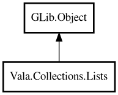

Lists
Object Hierarchy:

Description:
public class Lists : Object
Static utility methods for ArrayList operations.
Lists provides high-level operations like partition, chunk, zip, flatten, and groupBy that would otherwise require 5-15 lines of manual
loop code.
Example:
var list = new ArrayList<string> (GLib.str_equal);
list.add ("a");
list.add ("b");
list.add ("c");
list.add ("d");
var chunks = Lists.chunkString (list, 2);
// chunks: [["a","b"], ["c","d"]]
Content:
Static methods:
- public static ArrayList<ArrayList<string>> chunkString (ArrayList<string> list, int size)
Splits a string list into sub-lists of the given size. The last chunk
may be smaller.
- public static ArrayList<string> distinctString (ArrayList<string> list)
Removes duplicates from a string list, preserving order.
- public static ArrayList<string> flattenString (ArrayList<ArrayList<string>> nested)
Flattens a nested list of string lists into a single list.
- public static HashMap<string,int> frequencyString (ArrayList<string> list)
Counts the frequency of each string in the list.
- public static HashMap<string,ArrayList<string>> groupByString (ArrayList<string> list, owned MapFunc<string,string> keyFn)
Groups elements by a key extracted from each element.
- public static ArrayList<string> interleaveString (ArrayList<string> a, ArrayList<string> b)
Interleaves two string lists by alternating elements.
- public static Pair<ArrayList<string>,ArrayList<string>> partitionString (ArrayList<string> list, owned PredicateFunc<string> fn)
Splits a string list into two lists based on a predicate. The first
list contains elements matching the predicate, the second contains the rest.
- public static ArrayList<string> reverseString (ArrayList<string> list)
Returns a reversed copy of the string list.
- public static ArrayList<ArrayList<string>> slidingString (ArrayList<string> list, int windowSize)
Returns sliding windows of the given size over the list.
- public static ArrayList<Pair<string,string>> zipString (ArrayList<string> a, ArrayList<string> b)
Combines two string lists into a list of Pairs. The result length is
the minimum of both list sizes.
- public static ArrayList<Pair<int,string>> zipWithIndexString (ArrayList<string> list)
Creates a list of Pairs with each element and its index.
Creation methods:
Inherited Members:
All known members inherited from class GLib.Object
- @get
- @new
- @ref
- @set
- add_toggle_ref
- add_weak_pointer
- bind_property
- connect
- constructed
- disconnect
- dispose
- dup_data
- dup_qdata
- force_floating
- freeze_notify
- get_class
- get_data
- get_property
- get_qdata
- get_type
- getv
- interface_find_property
- interface_install_property
- interface_list_properties
- is_floating
- new_valist
- new_with_properties
- newv
- notify
- notify_property
- ref_count
- ref_sink
- remove_toggle_ref
- remove_weak_pointer
- replace_data
- replace_qdata
- set_data
- set_data_full
- set_property
- set_qdata
- set_qdata_full
- set_valist
- setv
- steal_data
- steal_qdata
- thaw_notify
- unref
- watch_closure
- weak_ref
- weak_unref